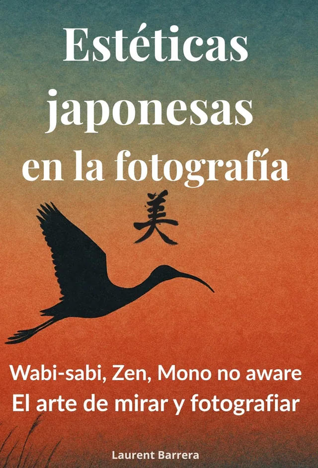

Essai · Décembre 2025
Esthétiques japonaises en photographie
Wabi-sabi · Mono no aware · Zen

Le livre
Une exploration des grandes sensibilités esthétiques japonaises (wabi-sabi, ma, yūgen, mono no aware, zen) et de la manière dont elles peuvent transformer notre pratique photographique. Un livre pour apprendre davantage à regarder, ressentir et suggérer, et pour en savoir plus sur le néo-japonisme en photographie.
La deuxième édition, revue et augmentée, a trouvé des lecteurs aux États-Unis, au Canada, en Espagne et en Italie. Après les éditions française, anglaise, espagnole et italienne, l’édition allemande est parue en septembre 2026.

Cinq langues
Un livre, cinq éditions


Wabi-sabi·Ma·Yūgen·Mono no aware·Zen
Fiche du livre
Esthétiques japonaises en photographie
- Parution
- Décembre 2025
- Langues
- français, anglais, espagnol, italien, allemand
- Formats
- papier et numérique
- Prix
- à compléter